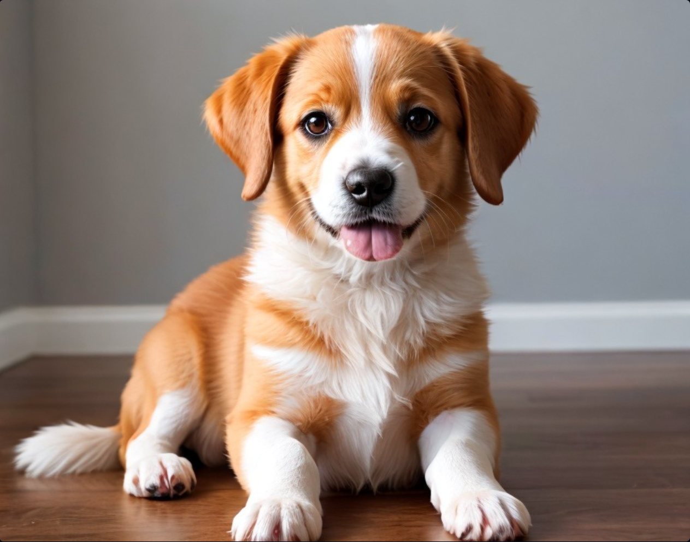
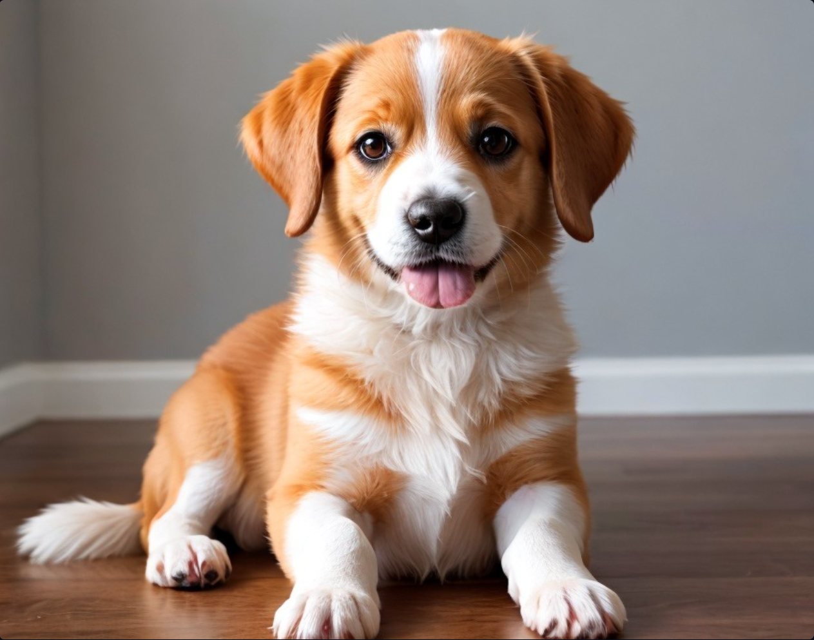

For a healthy, happy dog, proper nutrition and feeding are important.
To meet your dog's energy requirements, purchase brand-name food with high-quality ingredients or make your own dog food that meets established nutrient profiles.
Pet parents should ensure their dogs exercise regularly,
between 30 minutes and two hours daily. Play fetch, go
for walks, make a dog obstacle course, and play
indoor games for mental stimulation.  Let them exercise more if you have active or working breeds, but less exercise will be ideal if you have for example, a toy breed.
Training your canine companion encourages positive habits like obedience and proper manners. Crate training your puppy early will give them a safe space, as dogs love a quiet place to sleep and relax especially when you are away from home. Socialization with other dogs and people helps them become confident and adaptable.
Click this link for further information on how to take of a dog.
Pet parents should ensure their dogs exercise regularly,
between 30 minutes and two hours daily. Play fetch, go
for walks, make a dog obstacle course, and play
indoor games for mental stimulation.  Let them exercise more if you have active or working breeds, but less exercise will be ideal if you have for example, a toy breed.
Training your canine companion encourages positive habits like obedience and proper manners. Crate training your puppy early will give them a safe space, as dogs love a quiet place to sleep and relax especially when you are away from home. Socialization with other dogs and people helps them become confident and adaptable.
Click this link for further information on how to take of a dog.